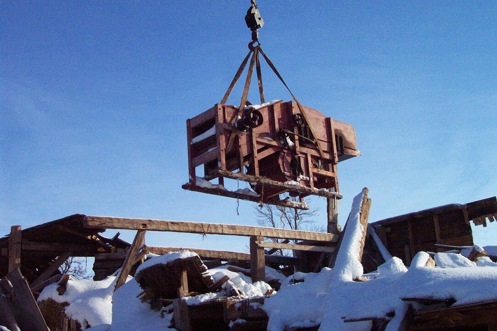

No.36 December 10, 2005
An update

Issue No. 2 (June 18, 2004) of the Community Foundation News carried the above photo of an Island-made Hall thresher. In brief, the thresher belonged to John MacQuarrie, was uncovered by Hurricane Juan, was rescued by Tony Glencross and Tom LeClair and is now in dry storage.
Its recovery, and that of some other pieces of Island agricultural history as well, stems from an effort of a small group of people including George Wright, Jack Cutcliffe, Dr. Tom Hall, Henry Compton, Tony Glencross, Tom LeClair and Don Glendenning. The group concluded that pieces of Island farm equipment are rapidly disappearing as a result of rot, rust and transport off the Island.
The group is now focused on three things:
Establishing an endowment for the purpose of providing financial support in the way of grants to continue the initiative in the years ahead.
Exploring ways to secure dry storage,
Taking an inventory of Island-made equipment in both public and private hands and identifying artifacts absent from existing collections.
I am delighted to report that Mr. Paul H. Schurman, well-known to all readers, has agreed to lead the endowment –building component with the following co-chairs: Warren Ellis for Prince County, Norman MacDonald for Queens County and Clayton Bulpitt for Kings County. Even as I write, I know that Paul has already set the initiative in motion. The endowment will be built over the next three years and will be a permanent endowment of the Community foundation of Prince Edward Island.
As a first step in identifying existing farm equipment, the Committee held discussions with Stan MacDonald, Potato Museum in O’Leary, Raymond Downe, Dundas Museum and Frank Butler and Tom LeClair from the PEI Museum and Heritage Foundation.
Securing dry storage is a pressing need in all museums but we have nothing to report at the moment.
_______________________________________
The Foundation News is an informal newsletter edited and published electronically by, and at the whim of, Don Glendenning. Think of it as a letter from a friend. Please let me know if you want your name removed from the mailing list. Feel free to send it to a friend or otherwise let me know that you want to be on the mailing list. Don may be reached through the Foundation Office or at don@glendenning.net